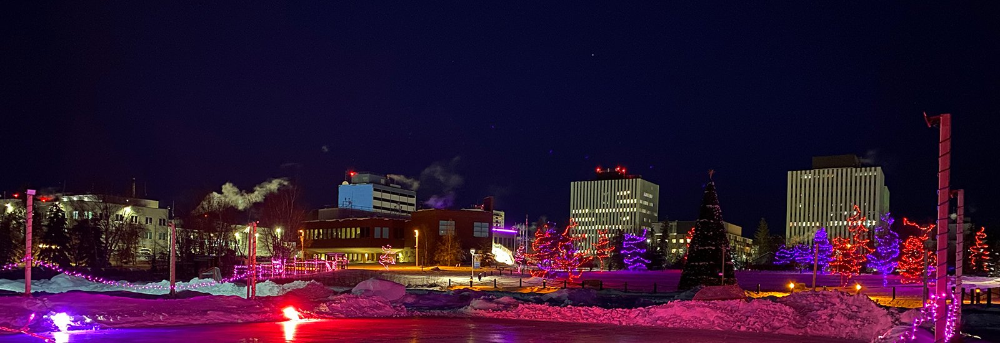
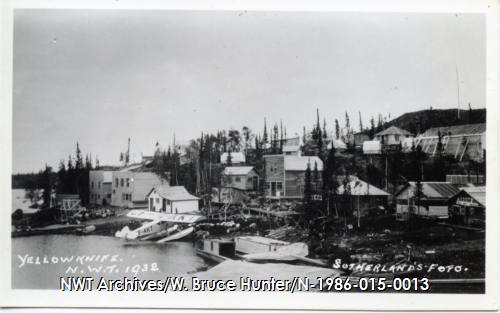

Yellowknife is the capital, largest community, and only city in the
Northwest Territories, Canada.
It is on the northern shore of Great Slave Lake, about 400 km (250
mi) south of the Arctic Circle, on the west side of
Yellowknife Bay near the outlet of the
Yellowknife
River.

Yellowknife and its surrounding water bodies were named after
a local Dene tribe, who were known as the "Copper Indians" or
"Yellowknife Indians", today incorporated as the
Yellowknives Dene First Nation. They traded tools made from
copper deposits near the Arctic Coast. Its population, which is
ethnically mixed, was 20,340 per the 2021 Canadian Census. Of the
eleven official languages of the Northwest Territories, five are
spoken in significant numbers in Yellowknife: Dene Suline,
Dogrib, South and North Slavey, English, and French. Modern
Yellowknives members can be found in the adjoining, primarily
Indigenous communities of Ndilǫ and Dettah.
The Yellowknife settlement is considered to have been founded
in 1934, after gold was found in the area, although commercial
activity in the present-day waterfront area did not begin until
1936. Yellowknife quickly became the centre of economic
activity in the NWT, and was named the capital of the Northwest
Territories in 1967. As gold production began to wane,
Yellowknife shifted from being a mining town to a centre of
government services in the 1980s. However, with the discovery of
diamonds north of the city in 1991, this shift began to reverse. In
recent years, tourism, transportation, and communications have also
emerged as significant Yellowknife industries.
History

Yellowknife is the capital city of Canada's Northwest Territories
and has a rich history that dates back thousands of years.
The area was originally inhabited by Indigenous peoples, including
the Dene and the Yellowknives Dene First Nation, who lived in the
region for generations. The city's modern history began with the
discovery of gold in the early 1930s, leading to a gold rush that
attracted prospectors from all over. The area's booming mining
industry fueled the growth of Yellowknife, and by 1934, it
officially became the capital of the Northwest Territories.
As the years progressed, Yellowknife's history diversified
beyond gold mining. In the mid-20th century, the discovery of
diamonds in the region sparked a new era of economic growth and
development. The Ekati Diamond Mine, which opened in 1998, marked
the first time diamonds were mined in Canada. Subsequently, other
diamond mines, such as the Diavik Diamond Mine, also contributed to
the city's economic prosperity and further established
Yellowknife's significance in the mining industry.
Yellowknife's history is deeply intertwined with the land and
the Indigenous peoples who have called this area home for centuries.
Today, the city serves as a cultural melting pot, where ancient
traditions and modern aspirations converge, making it a unique and
vibrant place to experience the essence of Canada's northern
heritage.
Living Here
Yellowknife's hometown feel and urban amenities make it a great place
to live, work and play! We are the capital city of the Northwest
Territories. Numerous daily flights are connecting us to the rest of
Canada and we have year-round road access.
It's a city of opportunity and experiences where you can grow a
career, build a business, raise a family, take time for yourself and
connect to your community. A vibrant arts culture, diverse population,
neighbourhoods brimming with character and a frontier history of
rugged entrepreneurship define day-to-day life in Yellowknife.
And up here, work-life balance truly exists. Whether you're interested
in a northern adventure filled with fishing and snowmobiling, or just
looking to live in a beautiful, small urban centre, Yellowknife could
be for you.